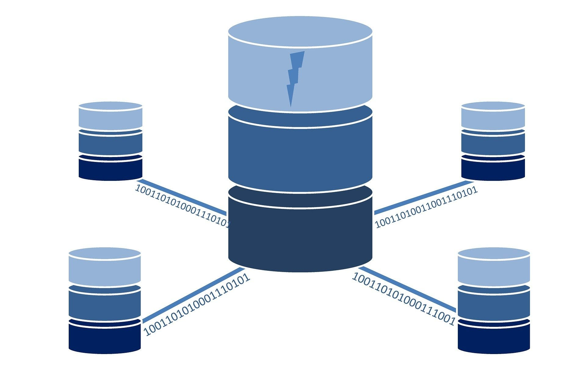

| Adatbázis rendszerek | Webprogramozas es design | Webes adatkezelo kornyezetek |
Adatbazis rendszerek
Oktato: Dr. Bednarik Laszlo
Kredit: 5
Tematika
- Tematika ismertetese. verzio kovető rendszerek.
- Adatkezelés alapfogalmai, adatperzisztencia szintje
- ER adatmodell, ER alapu modellezés lépései
- Relacios adatmodell, Relacios adatstruktura és integritasi feltetelek
- SQL nyelv áttekintése, SQL DDL nyelvi elemek
- SQL DML és DQL alapok
- SQL select utasitas, al-Select és összetett lekerdezesek
- Az adatmodellezes probemai, fuggosegek szerepe
- SQLite dbms architektura elemei
- a jdbc keretrendszer architekturaja
- Adatbazisok védelmi modelljei, a DAC védelmi modell, szerepkörök alkalmazása

Forrás:
https://szit.hu/doku.php?id=start